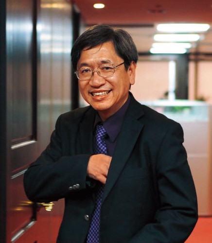

王榮德 醫師
職業醫學是現代醫學發展的一個重要的面向，其間需要醫師、醫學生能夠真切的關懷勞工甚至是一些弱勢階層的勞動條件與職業傷害治療及預防。因此在年會期間不管是透過現行公共政策的介紹，或者是企業政策與勞方訴求分別進行平行會議，讓醫學生可以走出醫學院的保護圈，真實地去理解理想、現實與目標的差異以及可能的解決辦法。
在會期最後一天上午，籌備團隊邀請到教育部終身榮譽國家講座主持人—王榮德教授，與大家談談「台灣職業醫學的過去、現在與未來」，並作為全國健康照護學生論壇的開幕演講，向與會者介紹職業醫學與職業健康的發展。
學經歷
- 現職：
國立成功大學醫學院公共衛生研究所講座教授
- 學歷：
美國哈佛大學公共衛生學院職業醫學博士
美國哈佛大學公共衛生學院工業衛生碩士
台灣大學醫學院醫學士
- 專長：
環境與職業醫學、內科學
流行病學
生活品質(Quality of Life)
醫療照護之成本效果研究(Cost Effectiveness in healthcare)
中草藥療效與安全性評估
李允中 經理
隨著國際間對永續經營的重視提升，台灣高鐵也更加關注治理、社會及環境面向，並將「4T」——運輸（Transportation）、科技 （Technology）、在地（Taiwan）及關懷（Touch）納入永續經營的元素，加強自身企業社會責任。
然而在達成理念與兼顧員工勞動品質往往不是一件容易的事，因此籌備團隊邀請到台灣高鐵職業安全衛生室資深經理—李允中先生，為年會帶來「台灣高鐵的員工職業健康政策」，與學員們分享高鐵公司安全政策和組織，並更進一步理解企業與資方的政策形塑過程與考量。
學經歷
- 現職：
台灣高速鐵路(股)公司職業安全衛生室資深經理
- 學歷：
國立台灣大學環境工程碩士
環境工程技師
政府環境工程高考公務人員資格
美國南加州大學(U.S.C)營建管理碩士
品質工程師
- 專長：
噪音、振動及廢水污染評估及其防制工程規畫、設計及施工
環境影響評估執行與追蹤管理
ISO14001環境管理系統建立與維護
職業安全衛生管理系統建立與維護
趙麟宇 理事長
回顧台灣，近年來社會大眾對於醫護人員的態度愈趨友善，並漸漸認知到「醫師的權益也就是病人的安全」，在此氛圍下，醫療工作者的勞動條件受到重視。終於在去年三月，嘉義基督教醫院工會正式成立，至今超過一千名會員，與資方進行集體協商，並準備簽訂團體協約，是目前台灣運作最成熟的醫師工會。
本次年會很榮幸邀請到嘉基公會的趙麟宇理事長，帶來「醫護人員職場權益與爭議」之平行議程，與學員們分享工會創立的初衷、過程及未來組織的理念方向，並談談對於近年來國內醫師工會萌芽趨勢的看法。
學經歷
- 現職：
戴德森醫療財團法人嘉義基督教醫院 骨科部 骨病科主任
嘉基體系戴德森醫療財團法人關係企業工會 理事長
- 學歷：
國防醫學院 醫學系醫學士學位
國立陽明大學國際衛生碩士學位學程
- 專長：
骨科專科醫師
外科專科醫師
高壓氧醫學專科醫師
顯微手術訓練證書(陽明大學)
醫用輻射操作證書(原委會)
李俊璋 教授
在去年暑假的尾聲，各電視台無不以聳動的標題報導最新一波食品安全問題–普芬尼毒蛋事件。其實這次的雞蛋污染事件起源於歐洲，並在短短兩個月內延燒四十國、數百萬顆雞蛋，是全球性的環境毒物污染事件，而在我們每天伸手可及的食物、空氣、土壤、水源中，充斥著各種環境及農業用藥，究竟該如何打造無毒生活是否也困擾著正在閱讀這篇文章的你/妳呢？
別擔心！籌對團隊非常榮幸邀請到權威環境毒物專家–李俊璋教授，為本次年會帶來「環境荷爾蒙–生命的隱形殺手」專題演講，為學員們介紹環境賀爾蒙的種類、影響，及相關配套法規，讓您參加完本次年會可以「安心吃，放心用」！
學經歷
- 現職：
特聘教授兼成功大學主任秘書
環境微量毒物研究中心主任
- 學歷：
國立台灣大學環境工程學研究所博士
國立台灣大學環境工程學研究所碩士
國立台灣大學公共衛生學系學士
- 專長：
空氣污染及其控制
環境毒物危險性評估與管理
環境微量毒物採樣分析
一般及作業環境空氣污染物採樣分析
職業與環境衛生
許君豪 醫師
 本次隆重登場的是全台灣非常稀有的專科醫師，同時也是中華民國環境職業醫學會的副秘書長—許君豪醫師，為本次年會帶來「職醫生涯」專題演講。自2001年衛生署公告成立職業醫學專科至今，全台灣僅有不到350位專科醫師，而身為其中的一員，許醫師將以其豐富的特約駐廠經驗，為我們帶來職業醫師生涯的經驗談，並以案例評估的方式讓學員們對於職醫科的實務運用更加了解！
本次隆重登場的是全台灣非常稀有的專科醫師，同時也是中華民國環境職業醫學會的副秘書長—許君豪醫師，為本次年會帶來「職醫生涯」專題演講。自2001年衛生署公告成立職業醫學專科至今，全台灣僅有不到350位專科醫師，而身為其中的一員，許醫師將以其豐富的特約駐廠經驗，為我們帶來職業醫師生涯的經驗談，並以案例評估的方式讓學員們對於職醫科的實務運用更加了解！
學經歷
- 現職：
環醫國際有限公司創辦人暨首席顧問
中華民國環境職業醫學會副秘書長
同時擔任眾多知名企業的特約駐廠醫師
- 學歷：
臺大醫學系畢業
- 專長：
企業健康管理顧問／企業臨廠服務
職業醫學／環境醫學
顏宗海 教授
 曾幾何時，台灣的食品安全已成為大家見怪不怪的議題，為了再次喚起大家對於環境醫學與食安的危機意識，籌備團隊邀請到毒物學權威––顏宗海教授以環境醫學的角度，與學員們分享台灣面對層出不窮的食安問題及其造成的環境災害，該如何應對並提高警覺，以求在這個「食」在不安心的台灣現況中，將對身體的傷害減至最低。
曾幾何時，台灣的食品安全已成為大家見怪不怪的議題，為了再次喚起大家對於環境醫學與食安的危機意識，籌備團隊邀請到毒物學權威––顏宗海教授以環境醫學的角度，與學員們分享台灣面對層出不窮的食安問題及其造成的環境災害，該如何應對並提高警覺，以求在這個「食」在不安心的台灣現況中，將對身體的傷害減至最低。
學經歷
- 現職：
林口長庚紀念醫院 腎臟科系教授
長庚大學 副教授
社團法人林杰樑醫師關懷健康協會 理事長
衛生福利部 食品藥物管理署 食品風險評估諮議會委員
衛生福利部 食品藥物管理署 健康食品審議小組委員
環境保護署 毒性化學物質諮詢會委員
經濟部 標準檢驗局 日常用品國家標準技術委員
臺北市政府 衛生局 食品安全委員
桃園市政府 衛生局 食品安全委員
新竹市政府 衛生局 食品安全委員
- 學歷：
國立台灣大學 醫學學士
英國倫敦大學 瑪麗皇后學院 醫學博士
林永頌 律師

法律與規範一直是政府及公部門執法的皈依，因此我們同時邀請到林永頌律師帶來「職場災害與法律救濟」等勞工權益相關法規及台灣法律的現況，林永頌律師在RCA事件中為受害員工辯護與爭取權利，足見一個時代法律的演進與權利的重要性。
學經歷
- 現職：
永信法律事務所主持律師
財團法人民間司法改革基金會董事長、常務董事、執行委員
- 學歷：
國立台灣大學法學碩士
國立台灣大學法學士
- 專長：
企業法律、契約撰擬暨談判、社會改革、法律扶助與國會遊說
何明信 專員
公部門在職災事件處理中當然也扮演著不容小覷的角色，因此籌備團隊邀請到高雄勞檢處的何明信專員來告訴學員們如何維護勞動權益，以「職業衛生、安全檢查實務與案例」為講題，輔以實例介紹政府機構如何執行勞動權益維護，其中則包含職災前預防、職災中調查、職災後協助與防止再發等充實的內容。
學經歷
- 現職：
高雄市政府勞工局勞動檢查處 專門委員
- 學歷：
中山人力資源管理研究所
- 經歷：
勞動檢查員25年，歷任檢查員、技正、科長
- 專長：
風險評估、事故調查、職業衛生
劉正千 老師
環境醫學是近年被熱議的話題，全球暖化與極端氣候更是為大家所擔憂，其所帶來的健康議題與疾病傳播也開始為醫學所重視。
而劉正千教授曾在NASA工作，對於環境研究及全球暖化對人類帶來的變異有相當深入而多元的看法，相信能為學員帶來精彩絕倫的劃時代思維。
學經歷
- 學歷：
英國倫敦大學帝國理工學院(Imperial College)，環境、地球科學與工程博士
國立台灣大學應用力學研究所碩士
國立台灣大學造船工程學系學士
- 經歷：
財團法人台灣地理資訊中心董事
國立成功大學地球科學系特聘教授
國立成功大學全球觀測與資料分析中心主任
劉念雲 小姐
此議程由工作傷害受害人協會主持，分享工傷協會在面對勞資方資訊與權力不對等的情況時，如何捍衛自己的權利與凝聚眾人的共識。並藉由近距離的座談對話讓學員們了解RCA抗爭這一件歷史大事其中事情始末與背景，以及RCA自救會做了多少努力才獲得這次的成功。
學經歷